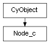

class cymel.core.cyobjects.node_c.Node_c¶

- class cymel.core.cyobjects.node_c.Node_c(*args, **kwargs)¶
Bases:
CyObjectCore functionality supported by the
Nodeclass.Supports node generation when creating a class instance without fixed arguments.
Methods:
Get the node name in absolute namespace notation without including the DAG path.
Whether the node is set to "must affect animation".
Get the classification name of the node type.
Get the classification name of the node type associated with the class.
connections([s, d, c, t, et, scn, source, ...])Get a list of connected plugs and nodes.
createNode(**kwargs)Generate a node of the type associated with the class.
destinations(**kwargs)Get a list of plugs or nodes to output to, skipping the unitConversion node.
destinationsWithConversions(**kwargs)Alias for
outputs(get a list of plugs or nodes to output to without skipping the unitConversion node).hasAttr(name[, alias, shape, strict])Whether an attribute with the specified name exists.
hasFn(fn)Is it compatible with the specified function type?
Get whether a node name is unique.
inputs(**kwargs)Obtain upstream connections.
Gets whether the node type associated with the class is an abstract type.
isDagNode()Whether it is a DAG node.
isDefaultNode()Is it the default node?
Whether this is a reference file node.
isInstanceOf(other)Whether it is the same node even if the DAG path is different.
isJoint()joint Whether it is a derived node.
isLocked()Locked or not.
Is it possible to rename?
isShape()shape Whether it is a derived node.
isShared()Whether it is a shared node.
I don't really understand the difference with
isFromReferencedFile.Whether it is a transform derived node.
isType(typename)Whether it is a derived type of the specified node type.
mfn()Get the Python API 2 function set.
mfn1()Get the Python API 1 function set.
mfn1_()Omit
checkValidto get the Python API 1 function set.mfn_()Omit
checkValidto get the Python API 2 function set.mnode()Get MObject of Python API 2.
mnode1()Get MObject of Python API 1.
mnode1_()Omit
checkValidto get MObject of Python API 1.mnode_()Omit
checkValidto get MObject of Python API 2.mpath()Get MDagPath of Python API 2.
mpath1()Get MDagPath of Python API 1.
mpath1_()Omit
checkValidand get MDagPath of Python API 1.mpath_()Omit
checkValidand get MDagPath of Python API 2.newObject(data)Create an instance with internal data.
node()Gets the node (this object itself is obtained).
nodeName([removeNamespace])Get the node name without the DAG path.
Omit
checkValidto get the node name without the DAG path.outputs(**kwargs)Obtain downstream connections.
plug(name[, pcls, strict])Get attributes of a node.
Get the plug class.
plug_(name[, pcls, strict])Omit
checkValidand get the attributes of the node.If the node type is a plugin, get the plugin name.
If the node type associated with the class is a plugin, get the plugin name.
plugsAffectsWorldSpace([pcls])Get a list of plugs that affect world space output.
Get the tuple of node types associated with the class.
setPlugClass([pcls])Sets a plug class that is valid only for this instance.
sources(**kwargs)Get the input plug or node while skipping the unitConversion node.
sourcesWithConversions(**kwargs)Alias for
inputs(get the input plug or node without skipping the unitConversion node).Gets the plug class set directly to this object.
type()Get the node type name.
typeId()Get the TypeId of the node type.
typeId_()Get the TypeId of the node type associated with the class.
type_()Get the node type name associated with the class.
worldSpacePlugs([pcls])Get a list of world space output plugs.
Attributes:
- TYPE_BITS = 0¶
Represents the characteristics of nodes supported by the class.
Method Details:
- absoluteName()¶
Get the node name in absolute namespace notation without including the DAG path.
- Return type:
- affectsAnimation()¶
Whether the node is set to “must affect animation”.
Normal nodes are False, which is determined automatically during the evaluation graph creation process, but a small number of nodes, such as time and expression, are True.
- Return type:
- classmethod classification_()¶
Get the classification name of the node type associated with the class.
- Return type:
- connections(s=True, d=True, c=False, t=None, et=False, scn=False, source=True, destination=True, connections=False, type=None, exactType=False, skipConversionNodes=False, asPair=False, asNode=False, index=None, pcls=None)¶
Get a list of connected plugs and nodes.
- Parameters:
s|source (bool) – Obtain upstream connections.
d|destination (bool) – Obtain downstream connections.
c|connections|asPair (bool) – The connecting source plug also gets air.
t|type (str) – Limit to specified node types.
et|exactType (bool) – If type is specified, whether to allow only an exact match with the specified type without allowing derived types.
scn|skipConversionNodes (bool) – Whether to skip unitConversion nodes.
asNode (bool) – Get the connection destination as a node instead of a plug.
index (int) – Specify an index if you want only one result. Negative numbers can also be specified. The result is a single result rather than a
list(None if not available). Even if a value outside the range is specified, an error will not occur and None will be returned.pcls – The class of the plug object you want to get. If omitted, the current default plug class obtained by
plugClassis used.
- Return type:
- classmethod createNode(**kwargs)¶
Generate a node of the type associated with the class.
This method itself returns the name (string) of the created node, but is called internally when creating a class instance without fixed arguments.
- Return type:
Note
For custom node classes registered with
nodetypes.registerNodeClass, it is recommended to override to add processing to satisfy the conditions of the_verifyNodemethod.
- destinations(**kwargs)¶
Get a list of plugs or nodes to output to, skipping the unitConversion node.
Equivalent to specifying skipConversionNodes=True for
outputs, all other options can be specified.- Return type:
- destinationsWithConversions(**kwargs)¶
Alias for
outputs(get a list of plugs or nodes to output to without skipping the unitConversion node).
- hasAttr(name, alias=True, shape=True, strict=False)¶
Whether an attribute with the specified name exists.
Similar to the
plugmethod, the criteria are looser than hasAttribute of MFnAttribute, allowing omission even if a full path starting with a dot is required.- Parameters:
name (str) – Attribute name or path name. Multi-attribute indexes must not be included. Full path notation starting with a dot can also be specified. You can also specify an alias name.
alias (bool) – Allow alias names.
shape (bool) – Also search by shape.
strict (bool) – Even if a leading dot is specified, attributes with unique names other than the top level are allowed.
- Return type:
- hasFn(fn)¶
Is it compatible with the specified function type?
- inputs(**kwargs)¶
Obtain upstream connections.
This is equivalent to specifying s=True, d=False for
connections, and all other options can also be specified.
- classmethod isAbstractType()¶
Gets whether the node type associated with the class is an abstract type.
The return value is an integer, where 0 means not an abstract type, 1 means an abstract type, and 2 means a metaclass (exists for things like plug-in interfaces, but is not actually a real node type).
- Return type:
Note
In the case of a node class with a conformance check method, the result is for the node type linked to the inherited basic class.
- isInstanceOf(other)¶
Whether it is the same node even if the DAG path is different.
If it is not an instance of a
DagNodederived class, it is the same as comparing with ==.- Return type:
Whether it is a shared node.
- Return type:
- isTrackingEdits()¶
I don’t really understand the difference with
isFromReferencedFile.- Return type:
- isType(typename)¶
Whether it is a derived type of the specified node type.
- mfn()¶
Get the Python API 2 function set.
- Return type:
MFnDependencyNode derivation
- mfn1()¶
Get the Python API 1 function set.
- Return type:
MFnDependencyNode derivation
- mfn1_()¶
Omit
checkValidto get the Python API 1 function set.- Return type:
MFnDependencyNode derivation
- mfn_()¶
Omit
checkValidto get the Python API 2 function set.- Return type:
MFnDependencyNode derivation
- mnode1_()¶
Omit
checkValidto get MObject of Python API 1.- Return type:
- mnode_()¶
Omit
checkValidto get MObject of Python API 2.- Return type:
- mpath()¶
Get MDagPath of Python API 2.
The resulting MDagPath is a copy of the internal data, so there is no problem in rewriting it.
Even if it is not an instance of a class that supports DAG paths, it can be obtained if the actual node is a DAG node.
- Return type:
MDagPath or None
- mpath1()¶
Get MDagPath of Python API 1.
The resulting MDagPath is a copy of the internal data, so there is no problem in rewriting it.
Even if it is not an instance of a class that supports DAG paths, it can be obtained if the actual node is a DAG node.
- Return type:
MDagPath or None
- mpath1_()¶
Omit
checkValidand get MDagPath of Python API 1.- Return type:
- mpath_()¶
Omit
checkValidand get MDagPath of Python API 2.- Return type:
- classmethod newObject(data)¶
Create an instance with internal data.
Internal data is assumed to be a black box, and even when overriding this method, the base method must be called to complete the process.
If you want to extend internal data, also override
internalData.- Parameters:
cls (
type) – Class of instance to generate.data – Internal data to be set in the instance.
- Return type:
指定クラス
- nodeName(removeNamespace=False)¶
Get the node name without the DAG path.
The resulting name is affected by Maya’s relative namespace mode. If you always want to get the absolute namespace, you can use
absoluteName.
- nodeName_()¶
Omit
checkValidto get the node name without the DAG path.- Return type:
- outputs(**kwargs)¶
Obtain downstream connections.
This is equivalent to specifying s=False, d=True for
connections, and all other options can also be specified.
- plug(name, pcls=None, strict=False)¶
Get attributes of a node.
It can be retrieved in the same way as a Python attribute, but this method is provided in case there is a conflict with the Python name.
Similar to the
hasAttributemethod, the criteria are looser than the MFnAttribute attribute, allowing omission even if a full path starting with a dot is required.- Parameters:
name (str) – A name that identifies the attribute. You can specify not only a single name, but also a mixture of compound hierarchies and multi-indexes. Full path notation starting with a dot can also be specified. You can also specify an alias name.
pcls (type) – The class of the plug object you want to get. If omitted, the current default plug class obtained by
plugClassis used.strict (bool) – Even if a leading dot is specified, attributes with unique names other than the top level are allowed.
- Return type:
- plugClass()¶
Get the plug class.
This can be changed with
setPlugClassorCyObject.setGlobalPlugClass.- Return type:
- plug_(name, pcls=None, strict=False)¶
Omit
checkValidand get the attributes of the node.Similar to the
hasAttributemethod, the criteria are looser than the MFnAttribute attribute, allowing omission even if a full path starting with a dot is required.- Parameters:
name (str) – A name that identifies the attribute. You can specify not only a single name, but also a mixture of compound hierarchies and multi-indexes. Full path notation starting with a dot can also be specified. You can also specify an alias name.
pcls (type) – The class of the plug object you want to get. If omitted, the current default plug class obtained by
plugClassis used.strict (bool) – Even if a leading dot is specified, attributes with unique names other than the top level are allowed.
- Return type:
- classmethod pluginName_()¶
If the node type associated with the class is a plugin, get the plugin name.
- Return type:
- plugsAffectsWorldSpace(pcls=None)¶
Get a list of plugs that affect world space output.
Get the tuple of node types associated with the class.
NodeTypes.relatedNodeTypescan be called as a class method.A basic class has one node type, but a custom class with an inspection method can be linked to multiple types.
- Return type:
- setPlugClass(pcls=None)¶
Sets a plug class that is valid only for this instance.
- sources(**kwargs)¶
Get the input plug or node while skipping the unitConversion node.
Equivalent to specifying skipConversionNodes=True for
inputs, all other options can be specified.- Return type:
- sourcesWithConversions(**kwargs)¶
Alias for
inputs(get the input plug or node without skipping the unitConversion node).
- thisPlugClass()¶
Gets the plug class set directly to this object.
If not set, None is returned.
This can be changed with
setPlugClass.- Return type:
typeor None